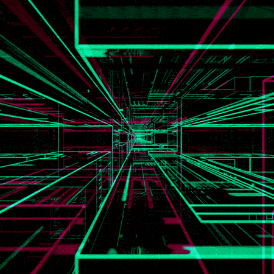

Thème : Enjeux Sociétaux environnement sécurité et énergie.
 />
Introduction :
Les possibles optimisations de la 5G m’impressionnent. Le débit est une fonction croissante de
l’énergie consommée. Le retournement temporel apporte une solution pour obtenir de faibles
rendements énergétiques. Pour des opérations à distance, des interfaces de faible latence,
automatisées, reliant véhicules et signalisations, pourront alors être perfectionnées. Cela me
passionne.
La 5G étant très énergivore, le retournement temporel peut permettre la réduction énergétique.
L’étude du lien entre téléphones et antennes permet la localisation d’emplacements optimaux, sans
interférence ni perte de débit. Ces positions sont transmises à l’antenne pour n’émettre que des
signaux sans interférences. Pour ainsi éviter la surconsommation électrique.
Professeur encadrant le candidat :
M. BISOGNIN
Positionnement thématique (phase 2):
INFORMATIQUE (Informatique pratique),
PHYSIQUE (Physique Ondulatoire),
INFORMATIQUE (Technologies informatiques).
Mots-clés(phase 2):
Mots-clés (en français) / Mots-clés (en anglais)
Retournement temporel / Time-reversal
Filtrage spatial / Beamforming
Interférence constructive,destructive / Constructive, destructive
Efficacité,rendement / Efficiency
Focalisation par retournement temporel / Time reversal focusing
Bibliographie commentée :
Le retournement temporel des ondes permet de focaliser des signaux dans l’espace et le temps. Son
application à la technologie 5G est clairement expliquée dans l’article [1], c’est une technique
envisagée pour augmenter le débit de la téléphonie mobile et réduire la consommation d’énergie.
Cette technique consiste pour l’antenne 5G à la transmission de signaux « précodés » vers un
téléphone. Le terme « précodé » signifie que l’antenne aura déterminé la position du téléphone
avant l’envoi des signaux. Le débit du signal transmis sera alors optimal, car adapté aux conditions
spatiales et temporelles du téléphone.
De plus, le document de DINH-THUY PHAN-HUY [6] montre que la focalisation par retournement
temporel permet aux antennes de suivre un véhicule en déplacement, tout en limitant les
interférences, ce qui améliore l’efficacité énergétique.
L’article mettant en valeur les interférences à deux ondes [2], permet l’étude du déphasage émis par
2 antennes 5G. Cette étude nous mène à la caractérisation d’un signal optimal possédant un débit
identique au signal initial et ayant une amplitude élevée. Ce signal nous apprend donc quel type de
signaux sélectionner pour que le retournement temporel effectue son filtrage.
Le spectre utilisé par les antennes 5G est celui des hautes fréquences, en moyenne : 700 MHz. Pour
l’expérimentation de notre système, on choisit d’utiliser les ultrasons, soit des ondes sonores
supérieures à 20 000 Hz. Elles sont inaudibles pour l’homme et permettent de mesurer facilement la
distance, d’un émetteur à un récepteur.
Lors de l’émission de 2 ondes, des interférences se forment. Un système de fente d’Young permet
l’étude des positions d’un téléphone 5G. En effet, le téléphone se déplace et rencontre des obstacles.
Les signaux qui convergent vers le téléphone se retrouvent alors interférés par ceux-ci. C’est ce que
l’on souhaite éliminer pour optimiser le réseau 5G.
L’article annonçant le retournement temporel comme une technologie moins coûteuse en énergie [3]
nous apporte une solution, le filtrage spatial. Ce filtrage permet l’élimination des zones
d’interférences. Les positions sont ainsi filtrées, des emplacements optimaux où il n’y a pas
d’interférence sont indiqués et utilisés.
En résumé, les positions se verront transmises par le téléphone vers l’antenne 5G puis seront filtrées
pour ainsi ne sélectionner que des emplacements optimaux.
Les antennes réalisent donc une économie en ajoutant, lors de l’émission d’ondes, une consigne : «
envoyer uniquement sur les emplacements optimaux ». Les interférences sont théoriquement
éliminées.
L’article [4] prouve que, une fois les zones d’interférences éliminées, le téléphone peut se déplacer
partout.
En effet, l’antenne actualise à tout instant, dès qu’un déplacement est effectué, le filtrage du signal.
Le processus ainsi réitéré, le téléphone capte des signaux optimaux partout. Il recevra donc des
signaux filtrés, adaptés à sa position à un instant T et possédant un débit non dégradé.
Pour observer ce phénomène, une carte de mesure d’amplitude nous permet de déterminer
expérimentalement les emplacements optimaux.
La documentation matplotlib [5] nous permet de modéliser cette même carte d’amplitude sur
python. Les mesures expérimentales se verront validées si les positions sélectionnées sont optimales
et d’amplitudes maximales ; sinon elles seront invalidées.
Ce qui permet enfin de transmettre les données des positions à l’antenne, comme montré dans
l’article [6].
Problématique retenue: Le filtrage par retournement temporel s’adapte-il à une antenne et un téléphone 5G, afin de diminuer la consommation d’énergie en gardant une forte bande passante ?
Objectifs du TIPE du candidat: Je me propose de :
[1]1. Caractériser les zones d’ombres, où l’amplitude est minimale, formées lors de l’émission de signaux par deux émetteurs déphasés.
[2]2. Caractériser les zones claires, où l’amplitude est maximale, formées lors de l’émission de signaux par deux émetteurs déphasés, ce sont les zones qui vont être filtrée par retournement temporel.
[3]3. Modéliser un algorithme déterminant les positions des zones claires pour n’importe quel emplacement du téléphone.
Références bibliographiques (phase 2) :
[1] POUR LA SCIENCE / JEAN-MICHEL COURTY ET EDOUARD KIERLIK : Du retournement temporel pour les téléphones 5G. : https://www.pourlascience.fr/sd/physique/du-retournement-temporel-pour-les-telephones-5g-9964.php
[2] INTERFÉRENCE A DEUX ONDES / FEMTO-PHYSIQUE : https://femto-physique.fr/optique/interference-a-deux-ondes.php
[3] LA 5G SERA AUSSI UNE TECHNOLOGIE MOINS COÛTEUSE EN ENERGIE / Article de imtech.wp.imt.fr : https://imtech.wp.imt.fr/2017/02/06/5g-moins-couteuse-energie/
[4] ENJEUX / MODULATION SPATIALE ET ANTENNE RECONFIGURABLE POUR CONNECTER EN HAUT DEBIT DES CAPTEURS MOBILES ET AUTONOMES EN ENERGIE / SPATIAL MODULATION / DINH-THUY PHAN-HUY : https://anr.fr/Projet-ANR-15-CE25-0016
[5] NOTICE PYTHON MATPLOTLIB: http://hebergement.u-psud.fr/mpo-informatique/matplotlib_notice_magistere.pdf
[6] GRAND PRIX DE L’ELECTRONIQUE GENERAL FERRIE 2018 / DINH-THUY PHAN-HUY / ORANGE LABS : Focalisation des ondes radio pour un internet-des-objets efficace en énergie. : https://anr.fr/fileadmin/documents/2019/GrandPrixGeneralFerrie_2018_DTPH.pdf
DOT :
[1] Début septembre, recherche d’un sujet de travail qui a fini par déboucher sur l’étude du
retournement temporel appliqué aux téléphones 5G. S’en suivit une recherche d’une bibliographie
fiable sur le sujet à étudier puis d’une expérience réalisable.
[2] Fin septembre, mi-octobre, choix d’expérimenter l’impact des interférences sur la dégradation
d’un signal.
[3] Fin octobre, capture des données expérimentales pour réaliser la carte d’amplitudes. Recherche
3
d’un moyen de modéliser en 3D les mesures, pour visualiser le ou les pics d’amplitudes.
[4] Modélisation d’une carte de mesure sur python pour confirmer la carte de mesure
expérimentale.
[5] Déchiffrement des 2 cartes fin décembre, je remarque qu’il y a trop d’interférences et que le
modèle n’est pas optimal à la prise de mesure.
[6] Début janvier, j’ai décidé de trouver l’orientation optimale des émetteurs, pour ainsi découvrir
une zone où je pourrai mesurer un ensemble de points sur une sinusoïde, pour confirmer le modèle
théorique python. En parallèle, rédaction de la MCOT.
[7] Février/Mars, analyse des expériences, modélisations.
[8] Avril/Mai, modélisation et finalisation d’un algorithme de filtrage déterminant les positions
optimales.